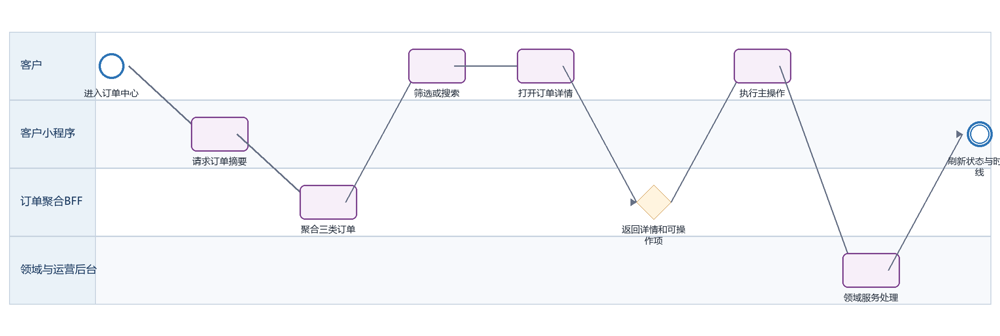
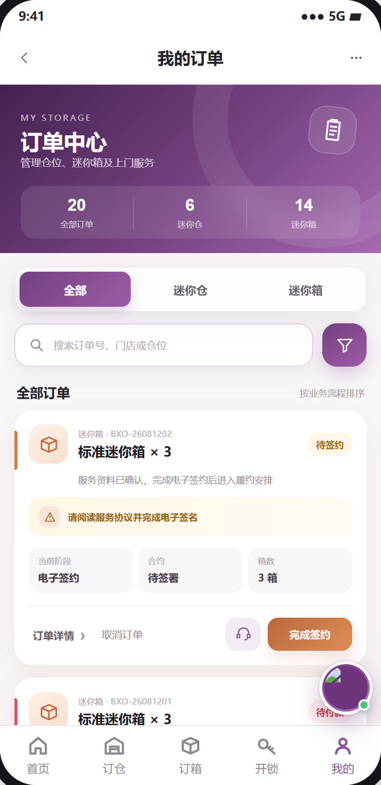
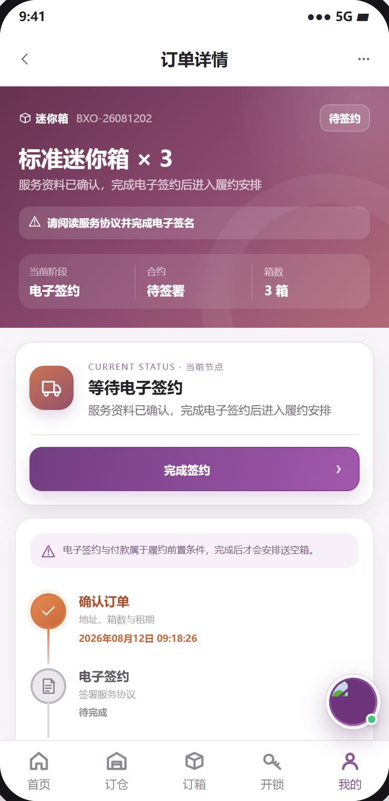
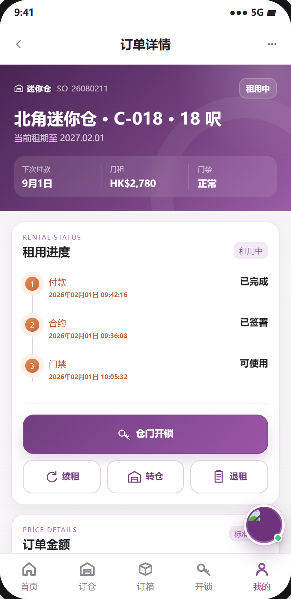
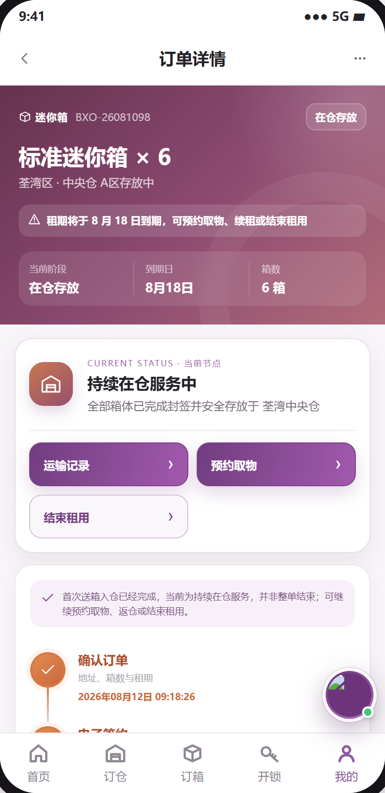
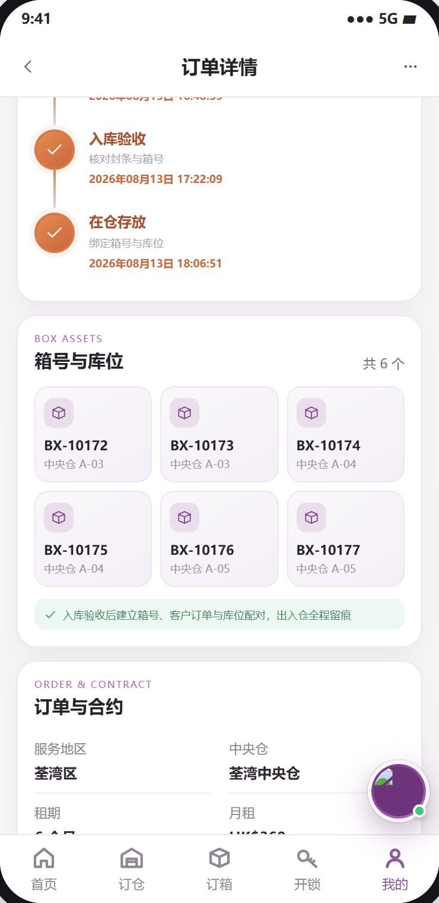

订单管理 PRD
下载 Word 文档订单管理 PRD
客户小程序研发详细需求规格 · V2.0 · 2026-09-08
统一定义迷你仓、迷你箱和商品订单的列表、筛选、详情、状态映射、动态操作、时间线、金额与资产展示，作为各业务模块的客户侧订单主入口。
| 属性 | 内容 |
|---|---|
| 文档编号 | MP-ORD-01 |
| 适用端 | 客户小程序、运营后台、工单小程序及领域服务 |
| 范围 | 订单总览、分类和组合筛选、搜索和排序、订单卡片、三类详情、状态聚合、allowedActions、物流/合同/保单/支付资产入口、取消规则、客服上下文。 |
| 不在本模块范围 | 各领域内部状态流转、支付渠道收单、合同模板维护和工单执行；订单中心消费这些服务的权威结果。 |
1 目标与边界
1.1 本期范围
订单总览、分类和组合筛选、搜索和排序、订单卡片、三类详情、状态聚合、allowedActions、物流/合同/保单/支付资产入口、取消规则、客服上下文。
1.2 不在本模块范围
各领域内部状态流转、支付渠道收单、合同模板维护和工单执行；订单中心消费这些服务的权威结果。
1.3 角色与系统责任
| 角色或系统 | 职责 |
|---|---|
| 客户 | 浏览、选择、签约、付款、提交申请、查询进度 |
| 客户小程序 | 采集意图并展示服务端状态，不自行决定价格、库存、资格或审批结果 |
| 运营后台 | 维护主数据、价格、库存、可操作项、审批、异常处理和人工改派 |
| 工单小程序 | 承接送取、验收、搬仓、清仓等线下任务，回传节点、附件和异常 |
| 领域服务 | 保存订单、租约、箱体、预约、支付与合同的权威状态并发布事件 |
2 BPMN 业务流程

圆形表示开始或结束事件，圆角矩形表示任务，菱形表示服务端判断。
跨端节点必须先写入领域服务，再由事件刷新客户侧时间线。
3 状态机与准入
| 状态码 | 客户文案 | 进入条件 | 下一步 |
|---|---|---|---|
| CUSTOMER_ACTION | 待客户处理 | 待签约、待付款、续租待签约 | 展示高优先主按钮 |
| FULFILLING | 履约中 | 迷你箱首次履约、商品配送、转仓/退租处理中 | 查看进度或物流 |
| ACTIVE | 服务中 | 迷你仓租用中、迷你箱在仓存放 | 展示租中服务 |
| EXPIRING | 即将到期 | 仓位到期提醒、迷你箱到期还箱 | 续租或退租 |
| AFTER_SALE | 售后中 | 退款、退货、异常工单 | 查看售后 |
| COMPLETED | 已完成 | 服务结束或商品签收完成 | 查看详情/再次购买 |
| CANCELLED | 已取消 | 订单关闭 | 查看详情 |
状态码是跨端契约，中文文案不得作为业务判断条件；写操作必须携带聚合版本并处理409冲突。
4 页面与交互
本节截图直接取自迷你仓小程序可交互原型的实际页面，不使用根据字段自行生成的示例图；业务权威值仍以服务端返回为准。
4.1 订单中心
| 属性 | 要求 |
|---|---|
| 建议路由 | /pages/orders/index |
| 入口 | 我的订单、首页提醒、支付结果 |
| 页面字段 | 全部/迷你仓/迷你箱/商品数量、关键词、业务类型、状态、下单时间、订单卡片、空态、分页游标 |
| 主要操作 | 切换类型、组合筛选、搜索、重置、打开详情、快捷主操作、取消符合条件的迷你箱订单、联系客服 |
| 通用状态 | 骨架屏、空态、无网络、超时、无权限、数据已变化、提交中、提交成功和提交失败分别实现 |

4.2 订单详情通用头部
| 属性 | 要求 |
|---|---|
| 建议路由 | /pages/order/detail |
| 入口 | 订单卡片或通知深链 |
| 页面字段 | 业务类型、订单号、商品/仓位/箱数、权威状态、状态说明、风险提示、创建时间、更新时间、allowedActions |
| 主要操作 | 根据服务端动作渲染主次按钮；未知动作不展示 |
| 通用状态 | 骨架屏、空态、无网络、超时、无权限、数据已变化、提交中、提交成功和提交失败分别实现 |

4.3 迷你仓订单详情
| 属性 | 要求 |
|---|---|
| 建议路由 | /pages/order/detail?type=storage |
| 入口 | 迷你仓订单 |
| 页面字段 | 门店、仓位、面积、租期、起止日、租金、按金、保险、优惠、应付/实付/退款、合同、保单、租用时间线、门禁状态 |
| 主要操作 | 继续签约付款、开锁、续租、转仓、退租、查看合同保单、联系客服 |
| 通用状态 | 骨架屏、空态、无网络、超时、无权限、数据已变化、提交中、提交成功和提交失败分别实现 |

4.4 迷你箱订单详情
| 属性 | 要求 |
|---|---|
| 建议路由 | /pages/order/detail?type=box |
| 入口 | 迷你箱订单 |
| 页面字段 | 套餐、箱数、租期、地址快照、箱号/封条/库位、首次履约与召回两条旅程、多程运单、运输权益、金额、合同 |
| 主要操作 | 签约付款、预约收箱、召回、返仓、退租、运输记录、展开箱体资产 |
| 通用状态 | 骨架屏、空态、无网络、超时、无权限、数据已变化、提交中、提交成功和提交失败分别实现 |

4.5 商品订单详情
| 属性 | 要求 |
|---|---|
| 建议路由 | /pages/order/detail?type=product |
| 入口 | 商品订单 |
| 页面字段 | 商品/SKU/数量、收货地址快照、金额、支付、配送、物流、确认收货、售后时限 |
| 主要操作 | 付款、查看物流、确认收货、申请售后、再次购买 |
| 通用状态 | 骨架屏、空态、无网络、超时、无权限、数据已变化、提交中、提交成功和提交失败分别实现 |
原型暂缺：当前可交互小程序原型未提供该页面，不使用自行绘制的替代图；进入开发前须补齐界面原型并完成产品评审。
4.6 订单关联资产
| 属性 | 要求 |
|---|---|
| 建议路由 | /pages/order/assets |
| 入口 | 详情中的合同/保单/凭证 |
| 页面字段 | 资产类型、编号、版本、状态、签署/承保/付款时间、文件摘要、下载权限 |
| 主要操作 | 查看、下载、联系客服；历史文件不可被新模板覆盖 |
| 通用状态 | 骨架屏、空态、无网络、超时、无权限、数据已变化、提交中、提交成功和提交失败分别实现 |

5 业务规则
列表默认按‘需客户处理优先、同类按业务进度、再按更新时间倒序’排序；服务端返回 sortKey，客户端不得仅凭中文状态推断。
搜索匹配订单号、商品、门店、仓位和服务端提供的 searchableText；输入300毫秒防抖，关键字最长50字符。
筛选支持业务类型、聚合状态和下单时间组合；切换业务类型后重置不适用状态，但保留关键词和时间条件。
列表使用游标分页，首次20条、后续20条；筛选变化取消旧请求，按 queryVersion 丢弃乱序响应。
订单卡片字段固定为业务类型、订单号、标题、描述、状态、风险提示、3项关键指标和动态操作；缺失字段使用‘--’，不得伪造。
详情以 orderVersion 做并发控制；从列表进入先显示快照并立即刷新，服务端新版本覆盖缓存。
所有按钮完全依据 allowedActions 数组渲染，动作对象包含 code、label、style、route、confirm、expiresAt、disabledReason。客户端不得按状态硬编码越权动作。
写操作携带 Idempotency-Key、orderVersion 和 traceId；409刷新详情并提示状态已变化，禁止本地强改状态。
迷你箱必须同时展示‘首次履约’和‘召回与取物’旅程，后者不得覆盖前者；箱体状态按 boxId 独立展示。
金额区统一展示原价、优惠、服务费、保险、按金、应付、实付、退款和币种；无值不显示该行，但应付/实付必须有。
客服入口必须传 orderId、businessType、statusCode、lastEventId 和客户问题预填，不允许客服页固定示例订单。
通知深链打开订单前校验登录和订单归属；无权、已删除或迁移订单显示明确错误并提供订单中心入口。
离线只允许读取最近缓存且标记更新时间；所有写操作禁止离线排队，以避免恢复网络后重复执行。
6 接口契约
| 方法 | 接口 | 用途 | 幂等要求 |
|---|---|---|---|
| GET | /orders/summary | 获取三类订单计数和待办数 | 否 |
| GET | /orders | 按type/status/date/keyword/cursor查询订单 | 否 |
| GET | /orders/{orderId} | 获取详情、version和allowedActions | 否 |
| GET | /orders/{orderId}/timeline | 获取分旅程时间线 | 否 |
| GET | /orders/{orderId}/assets | 获取合同、保单、支付、物流资产 | 否 |
| POST | /orders/{orderId}/actions/{actionCode} | 统一执行取消、确认收货等动作 | 是，Idempotency-Key |
| POST | /support/context | 创建带订单上下文的客服会话 | 是，clientRequestId |
通用响应包含code、message、data、traceId和serverTime。
金额使用整数最小货币单位；写接口校验登录身份、资源归属、幂等键和聚合版本。
错误码区分参数、资格、并发、锁定、支付确认、权限和服务不可用。
7 跨端交互和数据一致性
| 方向 | 规则 |
|---|---|
| 小程序到后台 | 只调用BFF或领域服务；后台通过同一业务编号处理。 |
| 后台到小程序 | 后台写领域状态并发布事件，小程序刷新权威状态。 |
| 后台到工单小程序 | 线下任务携带workOrderId、orderId、SLA和附件要求。 |
| 工单到客户小程序 | 扫码、附件和异常先回传领域服务，再生成客户可见时间线。 |
| 消息通知 | 只携带业务编号与深链，不下发敏感合同或门禁凭证。 |
7.1 领域事件
order.snapshot_updated
order.action_requested
order.status_changed
order.cancelled
order.asset_attached
order.timeline_appended
8 异常与恢复
| 场景 | 识别条件 | 客户侧与后台处理 |
|---|---|---|
| 列表部分服务失败 | 某业务域超时 | 返回 partial=true 和失败域；展示其他订单并提供局部重试 |
| 状态已变化 | 写操作 orderVersion 冲突 | 刷新详情，解释新状态，不重复原动作 |
| 未知状态 | 客户端版本未识别 | 显示‘处理中’，保留详情和客服，记录兼容性告警 |
| 支付结果未知 | 渠道处理中 | 状态显示付款确认中，禁用再次付款并允许刷新 |
| 取消后需退款 | 订单已有成功支付 | 订单进入取消处理中/退款中，展示预计到账和退款单 |
| 跨端节点缺失 | 工单已完成但订单时间线未更新 | 后台事件重放；客户端显示同步中而非跳过节点 |
9 三类订单状态与操作矩阵
| 类型 | 领域状态 | 聚合状态 | 允许操作 | 限制 |
|---|---|---|---|---|
| 迷你仓 | 待签约及付款 | CUSTOMER_ACTION | SIGN_CONTRACT, PAY, CANCEL | 合同有效且仓位锁定未过期 |
| 迷你仓 | 租用中 | ACTIVE | UNLOCK, RENEW, TRANSFER, MOVE_OUT | 按资格分别返回 |
| 迷你仓 | 租期即将到期 | EXPIRING | RENEW, TRANSFER, MOVE_OUT | 到期窗口内 |
| 迷你仓 | 续租待签约/待付款 | CUSTOMER_ACTION | SIGN_RENEWAL, PAY | 同租约其他变更禁用 |
| 迷你仓 | 转仓待审批/待付款/待排期 | FULFILLING | VIEW_PROGRESS, PAY_TRANSFER, RESUBMIT | 依审批结果 |
| 迷你仓 | 退租申请处理中 | FULFILLING | VIEW_PROGRESS, MODIFY_APPOINTMENT | 验收前按规则可撤销 |
| 迷你箱 | 待签约/待付款 | CUSTOMER_ACTION | SIGN_CONTRACT, PAY, CANCEL | 未进入配送 |
| 迷你箱 | 待安排送箱 | FULFILLING | VIEW_PROGRESS, CANCEL | 后台可配置取消截止 |
| 迷你箱 | 空箱已送达 | FULFILLING | SCHEDULE_COLLECTION | 至少一箱可收 |
| 迷你箱 | 在仓存放 | ACTIVE | RECALL, TERMINATE | 箱体未被其他任务占用 |
| 迷你箱 | 取物配送中 | FULFILLING | VIEW_LOGISTICS | 只读 |
| 迷你箱 | 待返仓 | FULFILLING | SCHEDULE_RETURN, TERMINATE | 箱体在客户处 |
| 商品 | 待付款 | CUSTOMER_ACTION | PAY, CANCEL | 未支付 |
| 商品 | 待收货 | FULFILLING | VIEW_LOGISTICS, CONFIRM_RECEIPT | 已发货 |
| 商品 | 已完成 | COMPLETED | AFTER_SALE, BUY_AGAIN | 售后期内展示售后 |
10 非功能与安全
列表首屏P95不超过2秒，详情P95不超过1.5秒；长流程返回受理结果和异步进度。
敏感字段最小化展示，日志脱敏，下载资产使用短时签名URL。
所有状态变更记录前后值、操作者、来源端、原因码、时间和traceId。
支持简体中文、繁体中文、英文；日期、货币和地址按香港业务规范展示。
11 埋点与指标
| 事件 | 触发 | 关键属性 |
|---|---|---|
| page_view | 进入页面 | pageCode、source、orderId、businessType |
| action_click | 点击主要操作 | actionCode、statusCode、orderVersion |
| submit_result | 写操作完成 | requestId、result、errorCode、durationMs、traceId |
| flow_step_changed | 业务节点变化 | fromStatus、toStatus、eventId、operatorType |
12 验收标准
AC-01 三类订单数量、列表结果和筛选条件一致，切换分类不会串数据。
AC-02 关键词可命中订单号、门店、仓位、箱号或商品名，清空后恢复当前分类全量。
AC-03 订单状态变化后，旧页面执行动作收到409并刷新为最新状态。
AC-04 服务端移除某个 allowedAction 后，客户端刷新即隐藏对应按钮。
AC-05 迷你箱部分召回时，详情同时显示未召回箱体在仓和召回箱体配送中。
AC-06 迷你仓待签约订单展示合同和付款主操作；租用中订单展示开锁、续租、转仓、退租。
AC-07 待付款订单重复点击支付只复用或安全创建新的支付尝试，不产生重复扣款。
AC-08 符合条件的迷你箱取消后释放送箱时段；已付款订单显示退款处理中。
AC-09 订单详情所有时间来自服务端并按客户时区显示，原始时间保留UTC。
AC-10 接口超时、空列表、无网络、无权限、订单不存在均有独立可恢复页面状态。
13 研发交付清单
| 角色 | 交付物 |
|---|---|
| 产品与设计 | 页面状态稿、字段字典、三语文案和验收用例 |
| 小程序前端 | 页面、组件、登录恢复、状态处理、埋点和错误恢复 |
| 后端 | OpenAPI、状态机、幂等、权限、事件、补偿和审计 |
| 运营后台 | 配置、审批、异常处理、重试和人工兜底 |
| 工单小程序 | 任务、扫码、附件、节点回传和异常上报 |
| 测试 | 端到端、并发、权限、弱网、重复事件和补偿验证 |